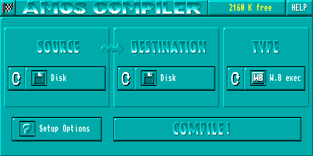
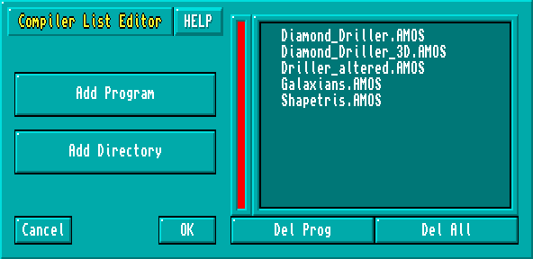

Welcome to the new, improved, AMOS Professional Compiler Shell. This provides you with total control over the compilation process using a series of simple, easy to use screen options. The AMOS Pro Compiler is packed with exciting new features. These include:
Integrated on-line help. So if you get stuck, help is only a key-press away.
AMOS Professional users can compile a program directly from the currently active editor window.
Automatic testing. (No more "program not tested" errors!).
A new batch mode which can compile several programs in a single operation.
Entertainment! You can now play your own selection of music and watch your favourite IFF animation files while your programs are compiled.
The Shell can be called up in two main ways:
If you're an AMOS or EASY AMOS user, you can only load the Compiler by either clicking on the "Compiler_Shell" icon from the Workbench or by booting directly into the Shell by inserting the AMOS Pro Compiler disk into the internal drive and starting up your Amiga.
If you're an AMOS Professional user, you're able to enter the Shell as above or from within AMOS Pro's editor by using a powerful new "Compiler Shell" option from the "User" menu.
Either way, you'll be presented with the following screen:

Those of you who have used the old Compiler might be thinking that this new Shell looks like a simple update to the original. But don't be misled by the apparent similarities. Underneath the surface, it's been completely transformed! Many options are totally new and others have been changed beyond recognition.
Take the "SOURCE" and "DESTINATION" icons for example. These buttons originally controlled the memory system and provided you with the choice between either loading the entire program before compilation, or reading the code piecemeal off the disk. However, with the introduction of the AMOS Pro Compiler, all this memory is allocated automatically.
So the effects of these buttons are totally different. The "SOURCE" icon just enters the location of your AMOS source programs and the "DESTINATION" button sets the position of the resulting code, They've nothing to do with memory at all!
The Shell includes a built-in help system which supplies you with practical advice about all aspects of the Compiler Shell.
Help can be accessed at any time using the "Help" icon at the top right of the control panel. When it's selected, the mouse pointer will change shape to show that you've entered help mode. You can return to normal by choosing the "Help" button again.
Once you've entered this help mode you can get instant details about any button or menu item by just selecting it with the left mouse button. As it's moved over the screen the pointer will animate when it enters an area which has Help available for viewing. The help will be presented in its own attractive text window. This screen should be familiar to all AMOS Pro users, as it's identical to the standard AMOS Pro help window. However, if you're a die hard Easy AMOS or AMOS 1.3x fan, you may appreciate a few simple directions:
Menu items are displayed in REVERSE text colours. These "hypertext" options can be selected with the mouse to move directly to a new area of help.
The "X" icon at the top left corner is an EXIT button. This quits help and returns you to the main Compiler Shell. You can now leave help mode with an additional click on the "Help" Icon.
If the current text is too large to fit in a single window, you can scroll through the information by either using the "scroll bar" or pressing the UP and DOWN arrow keys from the keyboard.
"Prev.Page" moves you back to the most recently displayed help page.
"Main Menu" jumps to a central help menu. Be sure to check out the "Latest News!" option. This contains all the latest info on the AMOS Pro Compiler.
"Print" outputs the current help page onto your printer. Check that it's connected first!
Note: The help system consumes around 150K of memory. So if you're running the package from inside AMOS Pro you may have to close a few windows before use. This will normally free up enough space for the system to work.
To control the Compiler simply click on the large screen icons with the left mouse button.
Here's a list of the available options:
Chooses the program to be compiled. The possibilities include:
Current Prog
compiles a program from the current editor window. This feature is
only available if the Shell has been called up from the AMOS Pro "User" menu.
Since it requires a hefty amount of memory it won't be selectable if you're running
short of space.
Disk
reads your program from the disk in either ".AMOS" or "ASCII" format.
You’ll be prompted for the filename when you call the Compiler.
List of progs
compiles a batch of programs in one smooth operation. See
"Compiling several programs" later in this chapter.
Enters a destination for the compiled program. The two states in can be in are:
Editor Window
can only be used if the "Current Prog" option has been selected as
the Source. It places the compiled program into its own individual editor window
ready for immediate running.
Disk
is the default. It compiles your program into a brand new file on the disk.
Selects the type of the compiled program. There are three possible settings:
W.B exec
These compiled programs can be run by Just clicking on their icons from
the Workbench screen. The Compiler will automatically save an appropriate icon to
accompany your program. You can redraw it using the IconEd utility from the
"Tools" folder of your Workbench disk.
CLI.Exec
Programs compiled in this way can be executed from the command line
by simply typing their names. Apart from not having a ".info" icon file, these
programs are identical to the Workbench versions.
AMOS Compiled
You can load and run these programs from AMOS Professional,
just like a normal Basic program. But they can't be loaded and run from AMOS 1.3x or Easy AMOS.
This icon compiles your programs using the current settings.
If a program is being compiled from disk you'll be requested to locate the file you want compiling using a file requester which pops up as soon as you click on this icon. If the resulting compiled file is to be saved onto disk, then you'll also be prompted for the destination file with another file selector.
You can choose a default destination name by simply clicking on the file selector's "OK" button, An appropriate filename will be automatically generated for your program, using a variation of the original source name. "AMOS Compiled" programs will have "C" inserted before the ".AMOS" bit. So "Test.AMOS" will be saved as "Test.C.AMOS".
CLI or Workbench programs will have the ".AMOS" part removed, "Test.AMOS" would now be compiled as just "Test".
Warning! The automatic naming system will only work if you've already saved your source program on the disk. If you're compiling from an unnamed program window, you'll need to enter a specific destination file into the file selector.
Also note that if you're compiling a list of files, the filenames will be computed automatically by AMOS Pro. The compiled programs will then be saved in the current directory, alongside their original source files.
After you've entered the filename(s), the Compiler can get to work, You can see how the compilation is progressing from the bar in the centre of the screen. As the program is compiled, this will slowly expand to the right. If that seems rather boring, you can also play an IFF animation or listen to a little music as your program is compiling. See the section on "Compiler Shell Setup" later in this chapter for more details.
If there's a problem, the Compiler will normally display the error in a small dialogue box. However, if you've compiled your program from an AMOS Pro window, you'll be returned straight to the editor with the cursor positioned over the offending line! Either way, the compilation can be aborted by pressing Control-C.
Once your program has been successfully compiled you'll be presented with an Information window containing a few statistics. You can return to the control panel by selecting "OK".
"Quit" exits the Compiler Shell and returns you to either the Workbench or the AMOS Pro Editor as appropriate.
The Shell is just not limited to compiling a single program, it can actually compile a whole batch of programs at a time. You can access' this feature by choosing the "List of progs" option as the "SOURCE".
When you click on "COMPILE", you'll now be presented with the Program list Editor like so:

HELP
This toggles the help system on and off. If it's highlighted you can get help on any part of
the list editor by just clicking on the various screen options.
Add Program
This button appends a single file to the compilation Window. It brings up a standard AMOS
Pro fife selector which is used to add a new program into the list.
Add Directory
Searches a directory for ".AMOS" files and copies their names directly into the compilation
list. As before, you'll be presented with a tile selector for selecting the desired directory. To
actually select a folder move to the required directory and double click on any AMOS file
within the folder – all the ".AMQS" files will be selected for compilation and their names
will be listed in the compilation window.
Del Prog
Deletes a program from the compilation list. Just select a program in the list window and
press the "Del Prog" button. If the required file is not on display you can scan through the
list using the large scroll bar to the left of the list window.
Del All
Removes all the entries from the compilation list leaving you with an empty window.
Cancel
Ceases the compilation and returns you to the main control-panel.
Ok
Begins compiling the selected programs. The Compiler will now read each program in turn
and save the compiled file to the disk using the default filename. If there's an error you will
be presented with a requester that allows you to stop the whole compilation batch or
continue. Any programs that create errors' will be left uncompiled.
You can abort from the Compilation run at any time by simply hitting the "Esc" key from the keyboard.
"Setup Options" forms the gateway to a large configuration menu. This allows you to fine tune the Compiler to your own particular needs.
Whenever the Compiler is run, the current settings are automatically read from the "AMOSPro_Compiler_Config" file. This file is first looked for by the Compiler in the current directory, if this search fails the Complier looks to the path "S/". Another failure will have the Compiler looking into the "S:" folder for the file. The configurations can be modified using a series of menus accessible from Hie Options menu.
Compiled Program setup
changes the way your programs will be compiled onto the disk.
Compiler Shell setup
alters the operation of the Compiler Shell.
Compiler System setup
sets the default command line options and saves the positions of
the various system files. These should only be changed if you're an expert user, as a single
mistake could stop your Compiler from functioning properly.
Load Config
loads the selected compiler configuration file from the disk.
Save as Default
saves a new "AMOSPro_Compiler_Config" file into the "S:" directory of
your current boot disk. If your boot disk is not presently available, you'll be asked to insert
it immediately. This option also saves the contents of the "SOURCE" "DESTINATION" and
"TYPE" buttons on the control panel. So you can tailor the initial Compiler Shell settings to
precisely your own requirements.
Save Config
stores the Compiler settings in a separate file on the disk. You can use it to
create different configuration files for different jobs.
Cancel
cancels any changes you've made to the configuration and returns you to the main
control panel.
Use
applies the new configuration tor the duration of the current session.
Include error messages?
Includes a copy of the standard AMOS error messages along with
your compiled program. "Yes" loads the messages from the "AMOSPro_Editor.Config" file
in the "APSystem" folder. Whenever an error occurs in your compiled programs an
appropriate message will be displayed to the screen.
"No" turns off the error messages completely. So if a problem occurs in your compiled program it will jump straight back to tile Workbench, CLI or AMOS Pro.
Create default screen
Normally, a standard AMOS screen will be created for your
compiled program.
"No" starts your program with a totally clean display. It's equivalent to using the NODEF option from the command line. Note your program must open a new screen before performing any output (print, fade, bob and so on). If you forget, your program will abort immediately with a "Screen not opened" error.
"Yes" spontaneously generates a default screen for your compiled program.
Send AMOS TO BACK upon booting?
"Yes" completely hides your current display, just
as if you had included an AMOS TO BACK instruction at the start of your program. The
screen can be flicked into view using an AMOS TO FRONT command, Easy AMOS users
don't have an AMOS TO BACK command, you'll have to save your program as an ASCII
file, edit in the extra command from a text editor and then Compile the ASCII listing.
CLI Program to run in the background?
This option is only important if you are compiling
your program as type "CLI".
"Yes" forces the compiled program to detach itself from the CLI and run as a separate process under the Amiga's multi-tasking system. It's the same as executing your CLI program with the AmigaDos RUN command,
Next panel:
Jumps to screen 2 of the "Compiled Program Setup" menu.
Cancel:
replaces your changes to the previous settings.
Ok:
returns to the main "Setup" menu with the settings setup as you have directed.
Long forward jumps (option LONG for VERY long programs)?
Forces the Compiler to
use 68000 JMP instructions rather than BRAnch commands in the compiled program. It's
needed to allow program structures such as IF..ELSE..ENDIF and WHILE..WEND to jump
across 32k boundaries.
"Yes" should be selected if you get a "Program structure too long, compile with LONG option" message during compilation, When you recompile, everything will be fine.
Include AMOS.Library in compiled program?
This option will only take effect if you're
compiling a program in CLI or Workbench format.
"Yes" instructs the Compiler to save a fresh copy of the "AMOS.Library" as part of the compiled program. As a result the compiled program will be 50K larger than normal, but it will be totally independent of the AMOS system.
"No" (default), Uses shared libraries. The "AMOS.Library" will now be loaded automatically from the "LlBS:" folder whenever your compiled program is run,
Next Panel:
returns you to Screen 1 of the "Compiled Program Setup" menu.
Copy all libraries onto RAM disk
If you've got an expanded machine, you can speed things
up by copying all the compiler libraries onto the superfast RAM disk. This feature should
only be used if you've plenty of memory since these libraries consume around 145k of RAM.
"Yes" instructs the Compiler Shell to copy the compiler libraries into a RAM disk during the initialisation process. If the RAM disk is not available the option will be completely ignored.
"No" deactivates the RAM disk copying.
Leave libraries on RAM disk upon exiting?
Yes" stores the compiler libraries
permanently on the RAM disk. So they'll remain in place for the duration of the current
session.
"No" forces the Shell to delete the entire contents of the RAM disk when you leave, returning about 145k of memory to your system. The next lime you run the Shell, it will be forced to copy all the compiler libraries back onto the RAM disk.
Keep APCmp in memory upon exiting?
"No" removes the Compiler before leaving. So
when you restart the Shell, APCmp will be loaded into memory again.
"Yes" keeps the Compiler in memory for the duration of the current session.
Squash compiled program?
"Yes" will tell the Compiler to compress your compiled
programs automatically before they are saved onto the disk. These files will be restored to
their original size whenever they are loaded from the CLI or Workbench.
Note: This option has no effect on programs compiled as type ".AMOS".
Next panel:
Jumps to Screen 2 of the "AMOS Shell Setup" menu.
Cancel:
resets any changes to their previous settings.
OK:
returns to the main "Setup" menu.
This panel offers a number of neat animation and sound options which can be played automatically during compilation. These provide you with a little light entertainment while the Compiler is going through its paces.
However, since they consume a great deal of ram they should only be utilised if you've memory to burn. Despite the warning though, these options are still worth a look, even on the smallest Amiga. They may be a bit silly, but they're a lot of fun!
Play IFF animation when Compiling
"Yes" plays an IFF animation while your program is
being compiled. This file must be an IFF animation module in mode 5 (DPAINT) format.
You select the anim file using a file selector which can be called up by clicking on the small
disk icon just below the Yes/No option button.
Note: If you want to use this feature, you'll need enough memory to hold the following data:
Your animation file (FAST RAM).
A new screen to play the animation (CHIP RAM).
So we recommend you have at least 2 megabytes of memory for this feature.
Play Tracker module when compiling
With this option, you can play a piece of music as
your program compiles. Your music can be either a tracker module, an AMOS music file, an
IFF sample, or a MED format tune. (The MED option will require the "MED.Library" In
your "LIBS:" folder.)
Once you've activated this feature, you can change the music file to be played using the small disk icon. This will present you with a file selector which is used to choose your new music.
Warn with bell sound
"Yes" rings a bell when the compilation is complete. If you've
previously assigned a MED or TRACKER file with the Music option, this feature will be
ignored.
Animated buttons when under pointer
"Yes" adds an attractive animation effect when the
pointer is moved over an option. Since it only consumes around 12K of fast memory It can
be used on even the smallest Amiga. "No" leaves the icons static.
Next panel:
returns you to Screen 1 of the "Compiler Shell Setup" menu.
Displays the "Compiler System Setup" menu It's strictly for advanced users, So beware! This option can seriously muck up your system!
CLI Compiler messages
changes the messages which are displayed when you are
compiling your program from the CLI.
Default command line
sets the default command line. See Chapter 8 for a detailed list of
the various options.
Compiler system files
enters the positions of the various library files used by the
Compiler.
Compiler error messages
edits the error messages used by the Compiler.
These options all work in the same general way. You select an item to be changed from a standard list window and edit it on the screen using a simple dialogue box. When you're satisfied. "OK" will enter the changes into memory, and "Cancel" will return you to the default version.
For more in-depth information use the Compiler Shell Help system - each system file's purpose is explained there.